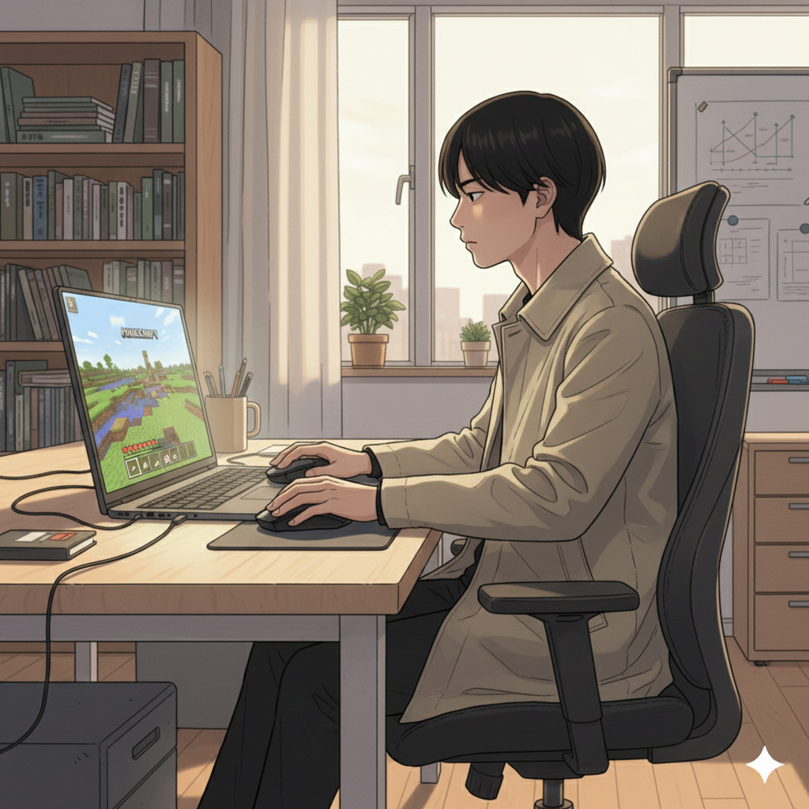
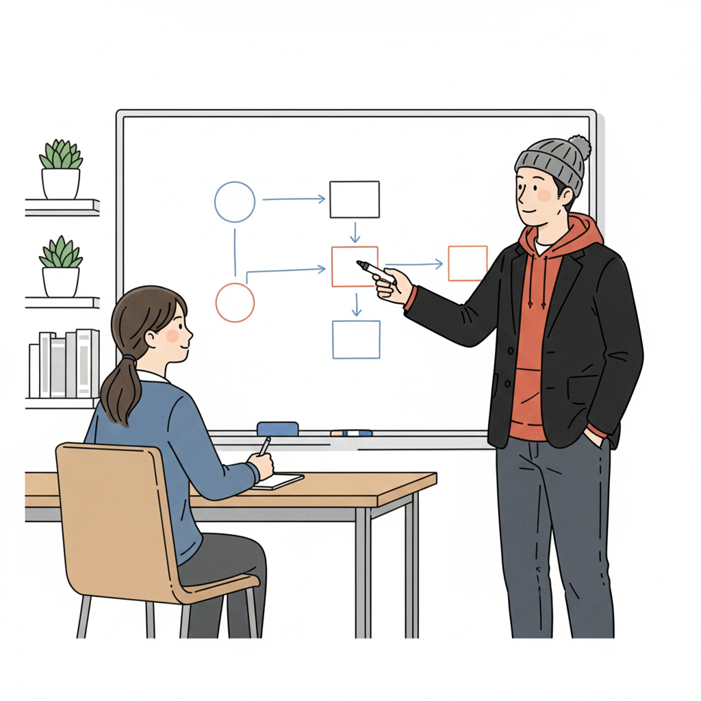
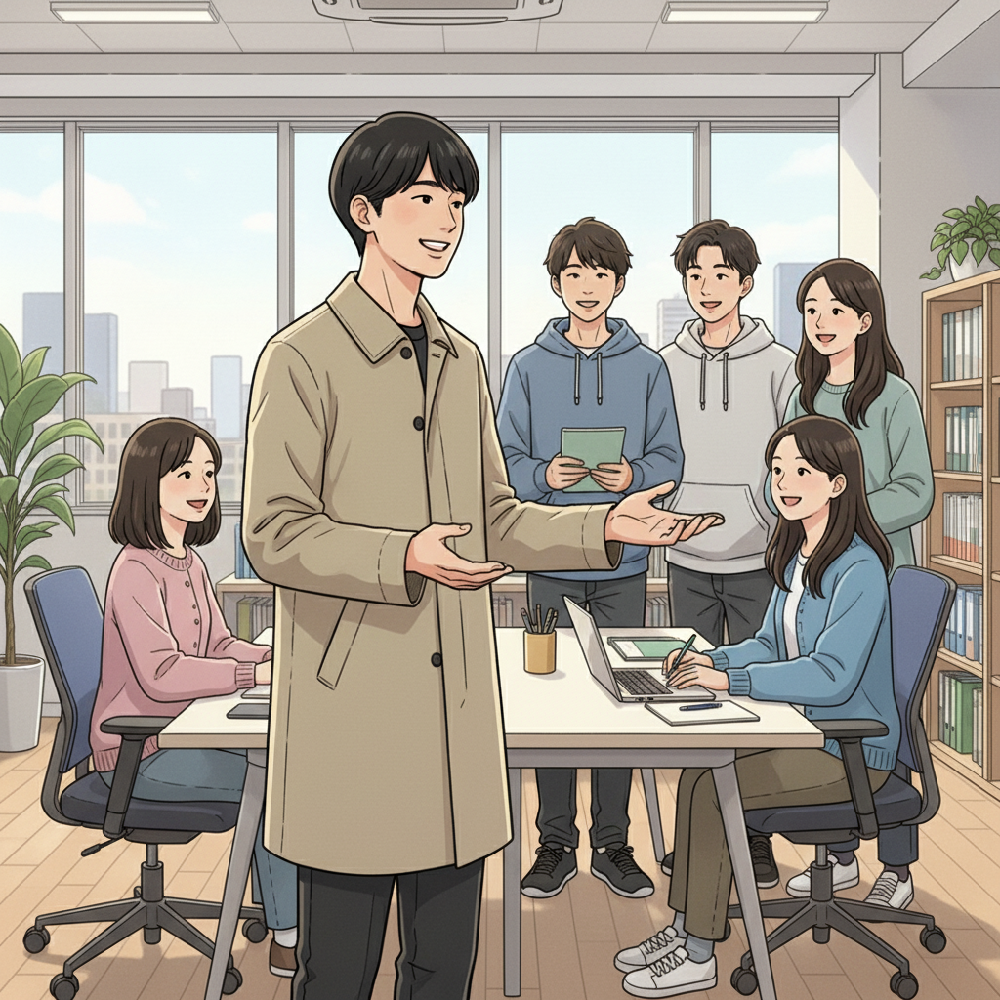

Minecraftが僕の才能を開花させた - 学生起業家の原点

「ゲームばかりして…」子どもの頃、親や先生によく言われた言葉です。特にMinecraftには夢中で、気づけば何時間も没頭していました。今思えば、あれはADHDの特性による集中力だったのかもしれません。
Minecraftの奥深さに惹かれ、特にコマンドを使いこなすことにハマりました。複雑な処理を自動化したり、オリジナルのミニゲームを作ったり…まるでプログラミングをしているような感覚でした。この経験が、僕の学生起業の原点になったんです。
高校生の時、if塾で塾頭に出会ったことで、僕の人生は大きく変わりました。
ADHDの集中力とMinecraftコマンドの知識が強みに
塾頭は、僕のMinecraftの知識と集中力を「才能だ」と言ってくれました。そして、その才能を活かして何かビジネスをしてみないかと提案してくれたんです。最初は戸惑いましたが、塾頭の後押しもあり、15歳で個人事業主として起業することを決意しました。
最初の仕事は、Minecraftのサーバー構築代行でした。コマンドの知識を活かして、クライアントの要望に合わせたオリジナルのサーバーを構築しました。ADHDの特性である集中力のおかげで、細部までこだわった質の高いサーバーを作ることができ、クライアントからも高い評価をいただきました。
この成功体験を通して、僕は自分のADHDの特性を「障害」ではなく「才能」として捉えることができるようになりました。
if塾での出会いが人生を変えた - 塾頭のサポート

if塾では、僕と同じように発達特性を持つ仲間がたくさんいました。みんなそれぞれ得意なことや興味のあることが違っていて、互いに刺激し合いながら成長していくことができました。特に、塾長の存在は大きかったです。塾長自身もADHDとASDの診断を受けていますが、自分の経験を活かして僕たち後輩をサポートしてくれます。
塾頭は、僕のビジネススキルを向上させるために、様々なアドバイスをくれました。例えば、プレゼンテーションの練習や、顧客とのコミュニケーション方法など、起業に必要なスキルを丁寧に教えてくれました。また、スタートアップに関する情報や、ビジコンの情報なども教えてくれ、僕の視野を広げてくれました。
自分らしいキャリアを築く - 発達特性は才能になる

今、僕は学生起業家として、自分のペースで仕事をしています。もちろん、うまくいかないこともたくさんありますが、その度にif塾の仲間や塾頭に相談し、助けてもらっています。発達特性を持つ僕にとって、自分らしい働き方を見つけることはとても重要でした。フリーランスとして働くことで、自分の得意なことに集中し、苦手なことを周りに助けてもらうことができるようになりました。
もし、あなたが発達特性を持っていて、将来に不安を感じているなら、ぜひif塾に来てみてください。きっと、あなた自身の才能を見つけ、自分らしいキャリアを築くことができるはずです。ADHD ゲーム 集中力は、あなたの強みになるかもしれません。Minecraftコマンドの知識は、学生起業 ITへの扉を開くかもしれません。
🎯 興味を持っていただいた方へ
if塾では、発達特性を持つ子どもたちの「好き」を「才能」に変える教育を行っています。現在の記事内容と実際の活動に大きなズレはありませんが、詳細については直接お問い合わせください。
📌 記事について
この記事は、塾頭による完全自動化への挑戦としてAIが自動生成しています。将来的には塾頭が執筆しているような記事になることを目指しており、現時点では事実と異なる内容が含まれる可能性があります。最新の正確な情報については、お問い合わせフォームよりご確認ください。
🤖 Generated with AI - if塾のブログ自動化プロジェクト